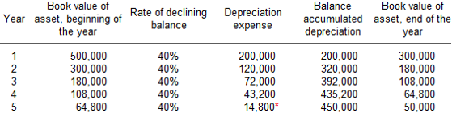

Depreciation
Ya Allah! Semoga kami berusaha sedaya mampu menambah amal ibadah dengan solat sunat, membaca Al Quran, bersedekah dan sebagainya.
AAmiin Ya Rabbal’alamin
Learning Slides


Introduction
In this chapter, student will be introduced to the fundamental concept of depreciation. It started with the answer to what is depreciation is? Some important terms with its meaning will be explain to the students. Finally, the cahpter will discuss on the two methods of depreciation calculation that will be covered in this chapter. Examples with solution will be provided to guide the students understanding on this topic.
What is depreciation?
Definition:
Depreciation is defined as the loss in value of capital assets such as vehicles, machinery tools and equipment due to usage over time.
Thus, in general the term depreciation refers to fall in the value or utility of fixed assets which are used in operations over the definite period of years. In other words, depreciation is the process of spreading the cost of fixed assets over the number of years during which benefit of the asset is received.
The fall in value or utility of fixed assets due to so many causes like wear and tear, decay, effluxion of time or obsolescence, replacement, breakdown, fall in market value etc.
The following factors are to be considered while charging the amount of depreciation:
1. The original cost of the asset.
2. The useful life of the asset.
3. Estimated scrap or residual value of the asset at the end of its life.
4. Selecting an appropriate method of depreciation.
Some of the important terms in depreciation are:
Original cost (C) : The cost paid for the item including any sales tax, transportation charges, installation charges and other cost that incurred.
Salvage cost (S) : Cost at the end of its lifetime. It is also called scrap-value or trade-in-value or junkyard.
Useful life (n) : life expectancy or the number of years the asset is expected to last. Sometimes called as economic life.
Book value (BV) : The difference between the original cost and the accumulated depreciation to that date. May also refer as the market value or market price of an asset at certain years.
Total depreciation : difference between original cost and the salvage value.
Annual depreciation : the amount of depreciation in a year.
Accumulated depreciation : the total depreciation to date.
Methods of Depreciation
In depreciation there are several methods that can be used. However, in this course, we are only cover two methods which are,
1. Straight Line Method
2. Declining Balance Method
Straight Line Method
This method is also termed as Constant Charge Method. Under this method, depreciation is charged for every year will be the constant amount throughout the life of the asset.
Accordingly depreciation is calculated by deducting the scrap value from the original cost of an asset and the balance is divided by the number of years estimated as the life of the asset.
\[ \begin{aligned} Annual\ Depreciation,\ AD &=\ \frac{Total\ Cost(C) - Salvage\ Value(S)}{Useful\ Life(n)}\\ \\ where\ ,\ n\ &=\ useful\ life\\ C\ &=\ Cost\\ S\ &=\ Salvage\ Value \end{aligned} \]
Example
Consider a piece of equipment that costs RM25,000 with an estimated useful life of 6 years and a RM6,250 salvage value. The depreciation expense per year for this equipment would be as follows:
\[ \begin{aligned} C &= 25,000 \\ S &= 6,250 \\ n &= 6 \\ \\ AD &= \frac{25,000 - 6,250}{6} \\ &= 3,125 \end{aligned} \]
The following table illustrate the depreciation process using straight line method:
| Year (\(n\)) | Opening Book Value | Annual Depreciation (\(AD\)) | Accumulated Depreciation (\(AcD_n\)) | Ending Book Value (\(BV_n\)) |
|---|---|---|---|---|
| 0 | - | - | - | 25,000 |
| 1 | 25,000 | 3,125 | 3,125 | 21,875 |
| 2 | 21,875 | 3,125 | 6,250 | 18,750 |
| 3 | 18,750 | 3,125 | 9,375 | 15,625 |
| 4 | 15,625 | 3,125 | 12,500 | 12,500 |
| 5 | 12,500 | 3,125 | 15,625 | 9,375 |
| 6 | 9,375 | 3,125 | 18,750 | 6,250 |
Some of the important formula that comes with this method are;
\[ \begin{aligned} Annual\ Rate\ of\ Depreciation &= \frac{Annual\ Depreciation}{Total\ Depreciation} * 100\% \\ &= \frac{AD}{TD} * 100\% \end{aligned} \]
or, can also use the following formula,
\[ \begin{aligned} Annual\ Rate\ of\ Depreciation &= \frac{1}{Useful\ Life} * 100\% \\ &= \frac{1}{n} * 100\% \end{aligned} \]
To find the Book Value at certain period, BV_n
\[ \begin{aligned} Book\ Value(BV_n) &= Cost\ -\ Accumulated\ Depreciation\\ &= C\ -\ nAD\\ \end{aligned} \]
Declining Balance Method
The declining balance method produces the highest depreciation charges in the earlier years of the asset. The book value of the asset remaining at the end of the depreciation year becomes the scrap value.

\[ \begin{align*} Rate\ of\ Depreciation(r)\ &=\ 1\ -\ \sqrt[3]{\frac{S}{C}}\ \ \ \ \ or\ \ \ \ \ 1\ -\ \sqrt[n]{\frac{BV_n}{C}}\\ \\ where\ ,\ n\ &=\ useful\ life\\ C\ &=\ Cost\\ S\ &=\ Salvage\ Value \end{align*} \]
The Book Value of any years is calculated by,
\[ Book\ Value(BV_n)\ =\ C\ -\ C(1\ -\ r)^n\\ \]
The accumulated depreciation for certain year can be calculated as,
\[ \begin{aligned} Accumulated\ Depreciation_n(AcD_n)\ &=\ Cost\ -\ Book\ Value\\ &=\ C\ -\ C(1\ -\ r)^n \end{aligned} \]
Practice Problems
Acknowledgements
Figure from Corporate Finance Institute. Retrived from https://corporatefinanceinstitute.com/resources/knowledge/accounting/types-depreciation-methods/